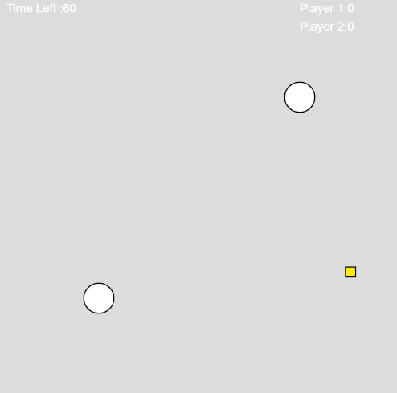
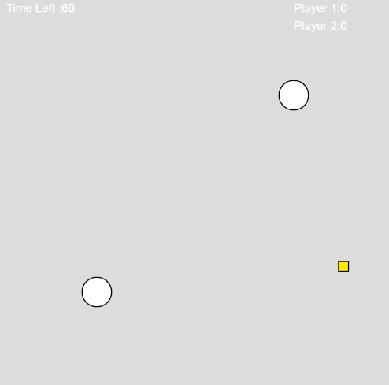
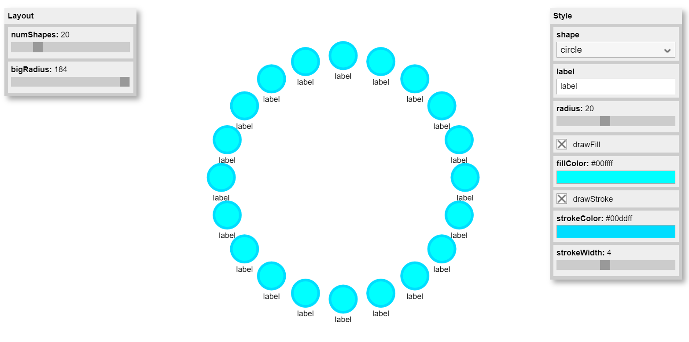

Midterm: league of kirby
Somehow, I don’t know how to start writing, because I feel like I have so much to say about this project!!! I think I really challenge myself with it and suffer from it, but also learn more than a lot. I am not going to lie so I think this below GIF really demonstrates my code. But let me introduce you the League of Kirby and let me walk you through my thoughts.
Originally, my goal is to make a simplified 1 on 1 version of MOBA games like League of legend. My sketches of the functionality are similar to their, where two players will try to get the most out of a given time and reach the destination. There are also obstacles on the way that will hinder the players when they try to get the points. The demo version of this game is in the below link, where two players can use the keyboard to control the position of Kirby and then eat the points. However, the control is really rough in this version, and there is no destination.
 Link to p5.js

Link to p5.js

With the basic function settling down, I start making the skins for the components. Inspired by the pixel art, I create the following assets with Procreate:
Different frames are made to looks like the Kirby is actually moving. To implement the animation, I search online and decided to use the p5.play library. This is when things start twisting together and getting trickier. Because it has many other function, so I start a new file and think it will be faster to just use the whole library, which turns out to be a huge mistake later. Most of the time I spend in this project is reading other’s library and trying to understand how to use them.
I made the movement for different directions, but in the library, because of the way that create() is set up, it is hard to switch the animations with the keyboard action, which could be simply switch if I just customize a show() function. I try to adjust the library, but I think I fail. Also with the library it is very hard to give the position constrains for the players. But overall the game is functional. You can play it with the link below:
Link to p5.js {% comment %} {% endcomment %}I am thinking to implement the constrains and sound effect in the future. I learn so much of library through this project. Even the process is very hard, I still appreciate this experience and what I get out of it.
Resources:
https://p5js.org/reference/#/p5/constrain
https://p5js.org/reference/#/p5/keyIsDown
https://molleindustria.github.io/p5.play/
https://molleindustria.github.io/p5.play/examples/index.html?fileName=collisions2.js
--------------------------------------------------------
Midterm Progress
For the midterm project, I have constructed the classes of player and the points.
I have successfully managed to use a keyboard to control the direction of the balls. I set up the timer for the game which is 1 minute. The time will show up on the left upper corner to count down. When the player is near the points, it will eat up the points and generate some new points. You can play it with the link below:
Link to p5.jsThings I still need to do:
Make skin for player and map (from api)
Add sound effect from sound libriries
Add a destination for each player to arrive
Refine the points system
Add another player
--------------------------------------------------------
Assignmemnt Library: Pacman
Oct 13, 2021
I first go through what are the popular libraries that P5 has, and thinking what can I make with them. Then I see the p5.gui which will generate some interfaces for the sketch. I am attracted by the pac-man at the cover, so I download it to see what is inside. It gives you a bunch of premade interfaces where you can control your sketch. Here are some examples:

With controlling the slide, the user will be able to change the parameter of the class inside the sketches such as numbers, sizes, colors and opacity.
Then I found there is a pac-man folder inside. So with this slide, the user will be able to change how wide will the pac-man open its mouth. I think it will be interested if I can make the pac-man actually eat up some rectangles with the splice function. Click on the link to see my code:
Link to p5.jsHowever, I am having difficulties to remove the rectangles. I used console log to check if the rectangles get splice out. The truth is that the rectangles that encounter the pac-man will disappear, but then the rectangles get re-drew right after that because I am using a for loop to push in new rectangle. I have not find a good way to solve this yet, hopefully I can fix it in the future.
--------------------------------------------------------
Midterm proposal
I want to simplify games like League Of Legend or Pokemon Unite to an easy 1 vs 1 game. I imagine one person will click on the keyboard and the other one will click the mouse. By clicking, the object stand for that person will move towards. The first person that reach the battel field will win the game.
Below is my pseudocode:
I will try to make the map interesting and asthestic, might also add fancy effect of the player runing.
--------------------------------------------------------
Assignmemnt 5 API: Cat facts
Oct 13, 2021
Originally, I was going to fetch bitcoin current price and draw a live-time bitcoin line, but the API since does not allow access. So I changed to the cat facts API very last minutes. This is the API I use:
Cat API AddressThere are five fun cat facts inside:
1. Wikipedia has a recording of a cat meowing, because why not?
2. When cats grimace, they are usually "taste-scenting." They have an extra organ that, with some breathing control, allows the cats to taste-sense the air.
3. Cats make more than 100 different sounds whereas dogs make around 10.
4. Most cats are lactose intolerant, and milk can cause painful stomach cramps and diarrhea. It's best to forego the milk and just give your cat the standard: clean, cool drinking water.
5. Owning a cat can reduce the risk of stroke and heart attack by a third.
I then went on google image to get the relative images. If the user clicks on the canvas, he/she will get a random fun fact about the cats.

Feel free to play the demo here: link to p5.js
--------------------------------------------------------
Reflect of Birds and The Fine Art of Noticing
Oct 12, 2021
When I first open this article, the picture on the top grab my attention. It put 12 months as a clock, then special events for birds will have special feathers to indicate them. The color, the size, they all can indicate the events’ details and importance. Then I start reading the article. Jer Thorp mainly talks about how more people start to join the birding events after the pandemic, and how he finds himself enjoying the experience. I am amazed by the data of birders and how they increased from 2018 to 2021. Originally it is just 1441 people counting, now because of all the devices and algorithms we get, the eBird checklists emerged with powerful abilities. The new biders now can see the cities in a new and more careful way. I feel like it is the same as bringing data from API to a certain interface, for example, P5.js. By using the data as input, we can create many different outputs with this strong tool. In most of the case, a simple image can always more intuitive than a bunch of words and numbers, just like the first picture on the top of this article. I think we as an entire society develop many new ways of dealing the same things because of the pandemic. We realize that how strong is our tools in our hands. Just like thousands of people are watching birds and collecting information about them, this is the data that exists in our daily life where we might possibly pull it up from an API. Then to turn them into stories or be persuasive, we can regenerate the data in a more intuitive form like table, graphics or even video or sound. The potential of these is only limited by our own imagination.
--------------------------------------------------------
Assignmemnt 4 Interaction: Pokemon Playground
Oct 6, 2021
I think it would be cool to create a pokemon playground with P5 js. Below are the 5 pokemons I choose:
Pikachu:

Psyduck:
Golduck:

Munchlax:
Snorlax:
Challange:
I want the ball to be open when I click the mouse to release a pokemon, then if the lower level pokemon collapse to each other, then they should merge to one higher level pokemon. For example, if two Psyduck hit each others, they should evolve to a Golduck. So I use the function "Splice" to take it out from the array. Here are some reference: https://www.youtube.com/watch?v=tA_ZgruFF9k
My final result look like this:
link to p5 js
--------------------------------------------------------
Assignmemnt 3 Dancy Party Sept 29, 2021
Recently I am watching the show brigerton and I think it will be cool if I can replicate their Waltz!
so here is my result, you can view the dance and the code here:
link to p5 js
 Reference for the chess board
Reference for the chess board
--------------------------------------------------------
Week 3 reading, Sept 29, 2021
Alt breaks down the evolution of computer programming, from binary code to how language builds on each other to evolve to today’s stage where we can draw or build up interface. As I have been always wondering the value of digital art, I think this paper really walks me through the definition of computer as a medium and how we use it to create art.
I have understood until I read the paper, that we can see computer as pencils and paper while we are creating digital art. One might argue that even a child can draw with pencil and paper, but not with computer. But I think it will be better to define a good art drawing first. One would need certain level of practice and skills to draw a masterpiece on paper, not just simple shapes like circle or rectangle. It is the same as coding. Before taking this class, I thought drawing with code would be easy, you just put different shape with different command. And kept asking myself why would those have any artistic value? Now until several my own practice and Alt’s work, I know that there is so much deeper than what I think. It only takes one class or object or function to spin your head around.
Not only the digital art, but computational programming also gave us the ability to interact with art and math. The Mathematical models now because the foundation of the art, in this saying, I feel like art now is more tangible that it is something we can interact with. I think the power of the computation that it is efficient in some ways, that after solving the math and coding problem, one will have the ability to replicate some part in the drawing with the way he/she wants very fast, saying using the class function, while it would be so time consuming on paper with pencil, on computer it might just be one click. Computer becomes the new medium, just like a good brush to a painter, can serve what the designers/developers the effect they needed.
--------------------------------------------------------
Assignmemnt 2 Sept 22, 2021
I was searching for the interesting clock on website, and then I saw this one. I think it is very pretty and challange to do. So I start trying it.

Then I start coding:


And here is my final result:
my references: https://p5js.org/examples/typography-letters.html, https://editor.p5js.org/re7l/sketches/rylwv-437, https://p5js.org/reference/#/p5/map,
--------------------------------------------------------
Week 2 reading, Sept 22, 2021
For the first reading, I chose The Art of Interaction Design. I really like how Crawford metaphors interaction as conservation. Sometimes it is hard to recognize if you are interact with something or just reacting in nowadays high tech world. But thinking about conversation will draw a rather clear line of the conclusion to distinguish if you are interacting or not. The division of input, processing and the output makes interaction easier to understand and to build based on a clearer understanding as a designer. I like how he also have rank for reaction and interaction, as I sometimes also confused a high reaction as an interaction. The examples of book and movie clearly demonstrate the three keys of Interaction must be existed: listen, think and speak. I might feel like I am interacting with the author but that is just in the emotional level, not the real interaction. I also agree that the misconception on dividing design process into graphic design and interactivizing step. When I did my internship in the OnePlus Technology, and I believe many other big tech companies do so too, they have a clear division of UI group and the UX group. To me, they are like the Möbius strip, one is the foundation to the other, like he said “good interactivity design integrates form with function”. Interaction is so special that it exceed other forms of human expressions. It is the tool in the designers’s hand to make computer competing with the other industries. It is what brings computer to the revolutionary era. From 1970s till now, from the first computer to personal computer almost on everyone’s desk, the interaction between human and computer becomes more and more important as it is computer’s intrinsic competitive advantage. I am now more excited to explore this unknown territory to discover more new software and hardware technologies.
--------------------------------------------------------
Week1 Sept 14, 2021
Since I was a kid, I always feel like there is division line between math and art. Especially in Asia countries, people who are good at math tended to be praised as “you are very logical!”, while people who are good at art will be praised as “you are very sentimental!”. Throughout the undergrads study, I have met people in engineering that can draw beautiful art, also people in art major that are really smart in math or engineering field. I did not realize the bias is still in my head until I read this article. I really how the article interprets the interactive art in a logical frame that combined the program, sensory inputs, and the memory. One sentence that really touches me is the “What often happens during this reductive and transformational process is that the subtlety in the work is lost simply because of the fact that things have to be defined with mathematical precision.” The common senses tend to divide math and art so clearly, that we almost forgot that to interactive art, experience cannot be excluded, which means human feeling and a non-feeling operating machine would need to be present at the same time in the progress, which means the division line could be very broad here. This brought me back to the in class exercise we had last week where we tried to redraw a famous painting in P5.js. It made me wonder that if the outcome of a digital drawing can also express emotion, or human feeling when the nature of it is actually sophisticated programed codes. Just like what Mr. Campbell demonstrated in the conclusion, that interactive art that uses a computer is still in its developmental stages, people like me who are new to this area might be confused or battling deep in the mind. But this article has successfully solves part of my tangle and I would like to try to build more to represent my thinking process in the present.
Sol Lewitt drawing
Wall Drawing #396 (1983): A black five-pointed star, a yellow six-pointed star, a red seven- pointed star, and a blue eight-pointed star, drawn in color and India ink washes.
Reference for star: https://p5js.org/examples/form-star.html
Source code: uploaded in the brightspace.